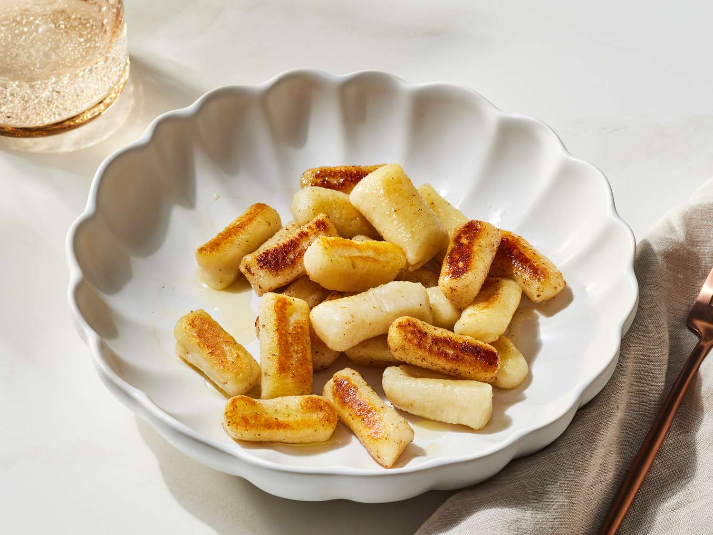

Home
Gnocchi

- 3 Russet Potatos
- 1 Egg
- 1/2 Flour
Steps
- Boil Potatos until fork tender
- Mash them up into mashed potatos
- Add Flour and Egg. Knead until a supple dough forms. Not too sticky, not too dry.
- Divide the dough into 4 pieces, roll those pieces into long snakes
- Cut those snakes into 1 inches pieces
- Put those pieces into a Boiling pot of water and cook them for 90 seconds
- Get a pan with a little bit of oil, and give them a crust